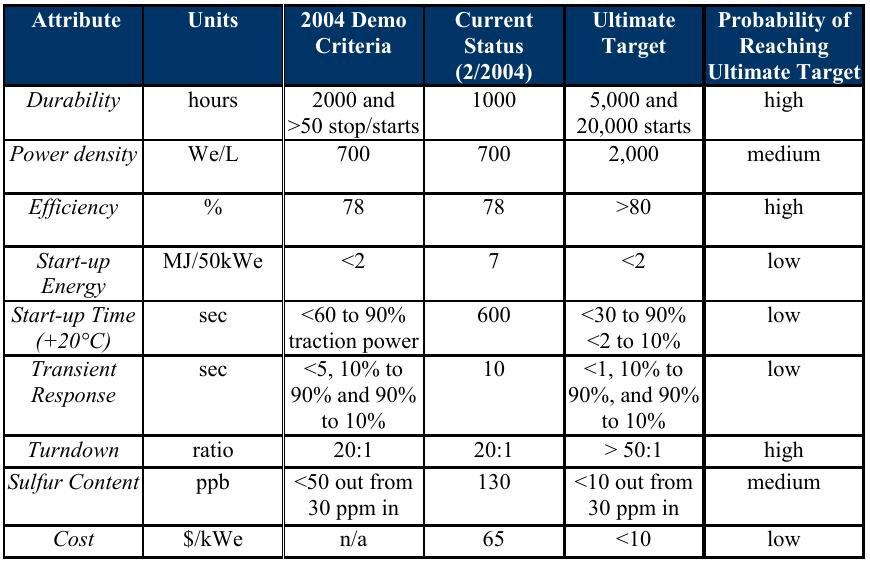

Liquid Plasma H2 Production
Plasma is one of the four fundamental states of matter with liquid, solid and gas [1]. In the course of our experimental work, we at Quantum Ingenuity came across a phenomena, full significance of which took us several agonizing months to fully grasp, formation of plasma from liquids. Even though the underlying assumption
is not self evident from learned discussions on plasma physics, consensus view about plasma formation implies that under most conditions plasmas form from ionizing gases
through the agency of heat, electricity or photonic radiation of some form or the other.
As we came to understand and perform more experiments on the topic, it became clear to us that certain very valuable matter transformations can be accomplished where standard industrial catalytic refining
options are incapable of competing either due to size limitations or by-product specificity or environmental considerations. Most obvious utility of such a system we came to see is Hydrogen production without
carbon content from liquid transportation fuels. A little history lesson is in order to understand what has been tried so far and what was the outcome in on-board hydrogen production schemes.
History of On-board Hydrogen Production
Department of Energy funded development of on-board hydrogen production for about a decade from 1994 to 2004. Study was focused on fuel-flexible processing of gasoline, diesel, ethanol and methanol on-board in order to produce on-board hydrogen.
This evaluation was conducted to prepare for freedomCAR 2015 commercialization target and National Renewable Energy Laboratory ('NREL') was the chosen entity to perform independent evaluation of the effort. Finally committee came to a decision
on June 2004 as a "NOGO" for continued funding and pursuit of on-board hydrogen production as a result of technical shortcomings. Primarily committee gave NOGO verdict on
Startup Energy, Startup Time, Cost and Transient Response. On market response grounds study concluded that all domestic car manufacturers moved away from
on-board hydrogen production, only foreign manufacturer experssing interest was Renault [2].

- Startup Energy: Energy required before starting to produce hydrogen. An average car will require somewhere close to a 100 KWe of power to run, hence 7 MJ/50KWe result translates into 1/2 a liter of gasoline must be used to start producing hydrogen
- Startup Time: Time to start producing hydrogen. 600 secs = 10 min it takes before hydrogen production.
- Transient Response: Time to reduce or increase hydrogen production. Took about 10 seconds to idle or come back from idle.
- Cost: $65/KWe equivalent corresponds to roughly $6500 for a sedan
Experimental Evidence
We believe in the old saying that seeing is believing. Below are simplified no holds barred experimental videos with replication instructions intended for a scientific and an engineering audience, please do not try these at home.
Kerosene and Water jointly producing Hydrogen
In this video, you will see Kerosene co-combusting with salt water to produce hydrogen.
What do you need to replicate this result?
- High voltage power supply -- Neon Transformer (Higher voltage the better)
- Hydrocarbon Feed -- Kerosene
- Aqueous Feed -- Water
- Electrolyte -- NaOH
- (optional) Nitrogen or Helium to flush reaction chamber to prevent accidental flame discharge.
- Industrial grade laboratory ventilation (CO and volatile organics are produced in large quantities)
Experimental Instructions are very straightforward:
- Put two electrodes one in hydrocarbon layer (Kerosene) and the water layer, make sure they are insulated from each other.
- Put some electrolyte in the water layer.
- Apply high voltage electricity and observe plasma formation from water towards the electrode in hydrocarbon side.
If gas analysis is performed, it will confirm presence of large quantities of hydrogen,
carbon monoxide and C1-2 hydrocarbons. Solids left behind when all hydrocarbon is transformed contain large quantities of Carbon (and some carbon nanotubes for good measure).
"Real" Methanol Plasma
In this video, you will see methanol reaching out from liquid surface to electrode in the air in a flame like formation. Considering there is no oxygen in the chamber, where is the
"flame"'s oxygen coming from? Methanol is auto-decomposing which is how hydrogen production occurs in this case. Stochiometrically perfect de-composition is occurring.
What do you need to replicate this result?
- High voltage power supply -- Neon Transformer (Higher voltage the better)
- Hydrocarbon Feed -- Methanol
- (Nitrogen or Helium to flush reaction chamber to prevent accidental flame discharge.
Experimental Instructions are very straightforward:
- Put two electrodes one in methanol layer (Kerosene) and the other in air just above it, make sure they are insulated from each other.
- Flush reaction chamber with an inert gas... nitrogen or helium will do. This is a crucial step as without Methanol will catch on fire.
- Apply high voltage electricity and observe liquid plasma formation from methanol to electrode in gas side.
"Real" Ethanol Plasma
In this video, you will see ethanol reaching out from liquid surface to electrode in the air in a flame like formation. Considering there is no oxygen in the chamber, where is the
"flame"'s oxygen coming from? Ethanol is auto-decomposing which is how hydrogen production occurs in this case. Stochiometrically perfect de-composition is occurring. If you watch
carefully, you will see carbon falling off from reaction core because ethanol contains 2 carbons and a single oxygen which means you are witnessing a Carbon negative fuel here,
as ethanol is originating from bio-world, it is at worst case scenario (spewing tail pipe emissions) is carbon neutral. In this case, about half of its carbon content goes out as solid carbon.
What do you need to replicate this result?
- High voltage power supply -- Neon Transformer (Higher voltage the better)
- Hydrocarbon Feed -- Ethanol
- (Nitrogen or Helium to flush reaction chamber to prevent accidental flame discharge.
Experimental Instructions are very straightforward:
- Put two electrodes one in ethanol layer (Kerosene) and the other in air just above it, make sure they are insulated from each other.
- Flush reaction chamber with an inert gas... nitrogen or helium will do. This is a crucial step as without Ethanol will catch on fire.
- Apply high voltage electricity and observe liquid plasma formation from ethanol to electrode in gas side. Beware that this is a highly energetic reaction producing UV rays
- Almost immediately carbon soot starts to fall away from reaction zone, this is tall tale sign of carbon sequestration of the best kind.
Methanol with "Normal" Plasma
In this video, you will see a normal air arc hitting methanol layer with typical conducting results.
What do you need to replicate this result?
- High voltage power supply -- Neon Transformer (Higher voltage the better)
- Hydrocarbon Feed -- Methanol
- (optional) Nitrogen or Helium to flush reaction chamber to prevent accidental flame discharge.
Experimental Instructions are very straightforward:
- Put two electrodes one in methanol layer (Kerosene) and the oter in air just above it, make sure they are insulated from each other.
- Apply high voltage electricity and observe gas plasma formation the electrode towards methanol on hydrocarbon side.
Current State
We are raising funding for third party validation for the following seven core claims we need to prove:
- Plasma can be produced from liquids.
- Water can be turned into a liquid plasma inside a hydrocarbon.
- Hydrocarbon plasma cracks into syngas directly in the air using a similar procedure.
- Process can be used to produce SynGas at a small scale.
- Process can be used to produce SynGas economically viably.
- Process can be used to produce hydrogen from the SynGas to be used in an internal combustion engine.
- Process can be used to produce hydrogen from the SynGas to be used in a Fuel Cell engines.
References:
- Plasma(Physics) Wikpedia. Plasma Physics. Accessed on June 15, 2014
- ON-BOARD FUEL PROCESSING GO/NO-GO DECISION DOE DECISION TEAM COMMITTEE REPORT. Published on August 2004 (Revised)